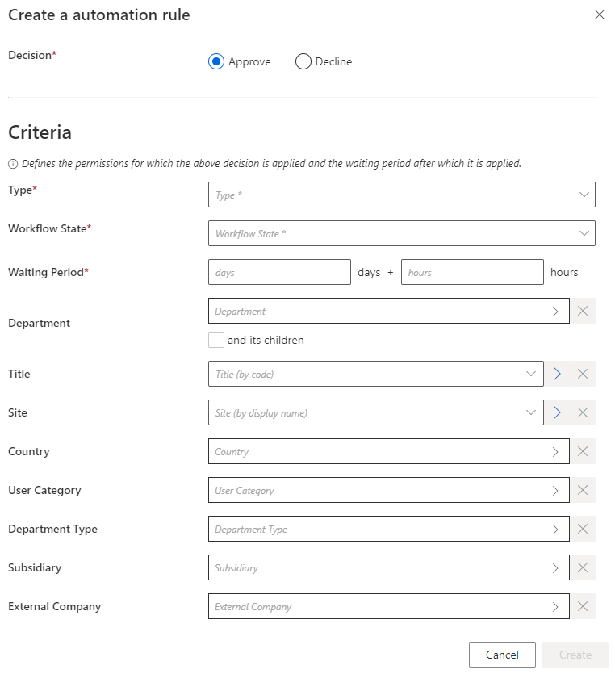
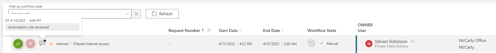

Automate the Review of Non-conforming Assignments
How to automate the review of non-conforming assignments through automation rules. See the Review Non-conforming Assignments and Automation Rule topics for additional information.
Overview
Non-conforming assignments can't be reviewed entirely automatically because this type of review sometimes needs the intervention of a knowledgeable user. However, automation rules can help by making automatic decisions (in place of the reviewer) on assignments that need to be reviewed after a given waiting period.
This type of rule is useful for example, when integrators intend to:
- Decline all non-conforming assignments after X days to avoid accumulation. The waiting time can be null if they need to delete non-conforming assignments as soon as they are detected;
- Automatically approve or decline discretionary requests if there is no validation after X days;
- Send notifications to validators before declining or approving pending approval assignments;
- Get information in order to deactivate an AD account if it hasn't been used in the past X days, before deleting it.
Integrators must show caution with pending approval assignments because this type of rule could short-circuit the whole approval process.
Participants and Artifacts
This operation should be performed in cooperation with managers who know the organization and their team's entitlements.
|
Input |
Output |
|---|---|
|
Mastered non-conforming assignment review (required) |
Automated assignment review |
See the Review Non-conforming Assignments and Categorize Resources topics for additional information.
Create an Automation Rule
Create an automation rule by proceeding as follows:

Step 1 – On the home page in the Configuration section, click on Access Rules.

Step 2 – In the dropdown menu at the top left, choose the entity type to which the future rule will be applied.

Step 3 – Click on the Automations tab and on the addition button at the top right corner.

Step 4 – Fill in the fields.
- Decision — Action to be taken on the described assignments.
- Criteria — Conditions that, if met, trigger the rule.
Currently, the criteria are used to match the context of an assignment and not the user data.
For example, if a single role is assigned based on a specific Department, then the context of the assignment has the information about the Department. In that case, an automation rule having in its dimensions that given Department will match this assignment and could Deny/Accept it. -
However, if a single role is assigned without any context on the Department (for example, a manual assignment with no parameter on the role), the automation rule will never match this assignment.
-
NOTE: No context will never be present for non-conforming or pre-existing roles
- Type — Assignment type concerned by the new rule. Once filled, a new field is displayed to select precisely an object from the existing objects belonging to this type.
- Workflow State — Workflow state of the assignments that need a decision.
- Waiting Period — Time period since the last change in the assignments' workflow states.
Remember, in a nutshell, this rule applies Decision to all assignments of Type (and matching all criteria), whose workflow state has been set to Workflow State for more than Waiting Period.
Impact of Modifications
A modification in an automation rule doesn't impact the assignments affected by the previous version of the rule.
Verify Review Automation
In order to verify the process:
Step 1 – On the Role Review or Role Reconciliation screen, spot an entitlement assignment.
Step 2 – Create an automation rule matching said assignment.

Step 3 – Compute the role model through the complete job on the Job Execution page.
Step 4 – Check on the Role Review page that the assignment's workflow state changed according to the rule's settings.

Any role affected by an automation rule shows a specific message on the Role Review page.